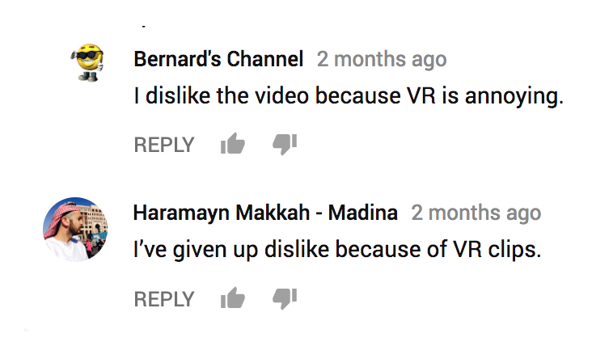
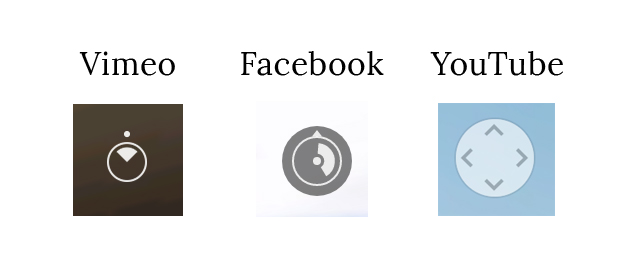
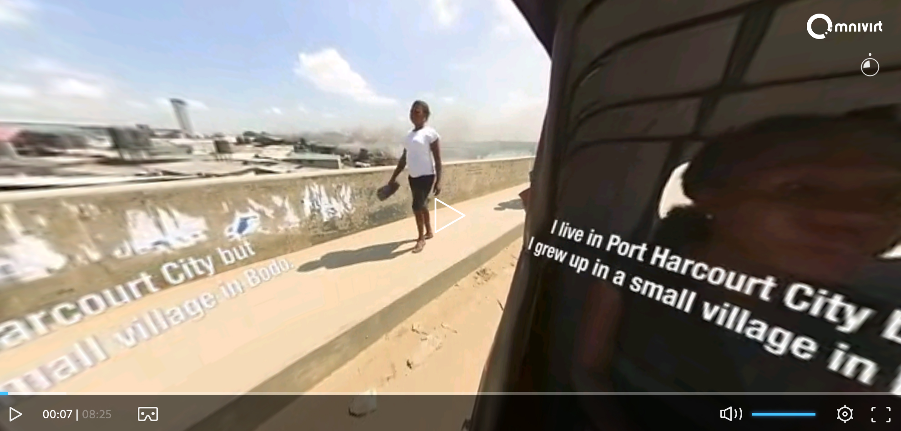
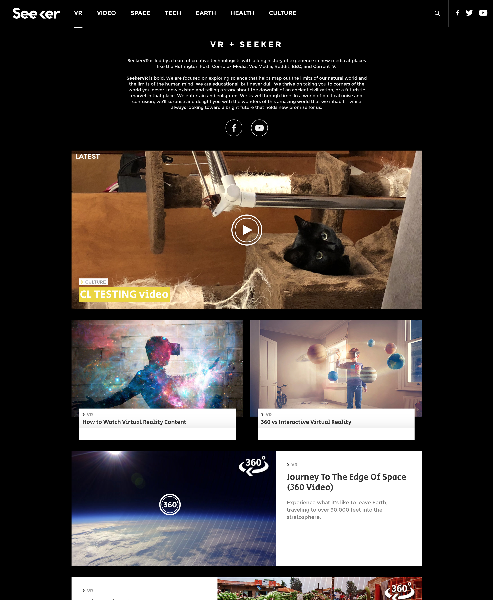

Immersive journalism is a world that I've been plunged into only this year. I've always had a passion for video documentaries and visual news. Vox, AJ+, Slate, and The New York Times hold my heart. However, the frontier of VR and AR technologies is still new — to both the world, and to me.
I approach the content skeptically. As a millennial bombarded daily by many formats and outlets to take in new information about our world, I latch onto the ones that are familiar. I often think many stories told in VR can easily be told (and often better) in a normal, 2D video format. My goal with Contrast is to design and support an experience to proves myself wrong.
Last year, I listened to Sam Parr, the founder of the tech and business email newsletter The Hustle, speak about his business model. This was his response to why he chose not to expand into Facebook or Twitter to share tech and business news, too...
"Facebook and email are very different mediums. The format of the newsletter is link-heavy and intended to be read linearly. The copy and links are specifically designed and meant for an email newsletter. We can’t copy and paste it onto Facebook and expect the same results."
I have explored immersive experiences across different platforms, from roomscale, to 360 video, and "magic window" experiences. These are my takeaways as a consumer of these experiences.
In general, it's rare to find a perfectly seamless 360 video experience. Sometimes, the definition of the video and editing is disorienting. This feeling isn't unique to Contrast VR, but rather a general experience for all existing immersive documentaries.
For example, a sequence would place the 360 camera next to a person speaking, but the stitching would make the person and the space around the person disproportional visually. It was distracting and I found myself not wanting to pan at all. Why pan into strange spaces when I could leave the screen in one place?
I can effectively experience a piece by leaving my screen in one place and completely bypassing the 360 functionality. What, then, is the benefit of 360 video if its only value proposition is frustrating to use? It makes sense for every piece of visual content to have one focal point, but the rest of it should be part of the narrative. It should never feel like an annoying, unnecessary gimmick.
Additionally, the 360 format makes subtitles and video captioning complicated and distracting. Every 360 video I've seen approaches it in the same way by overlaying skewed, static text once or multiple times over the video. This is a strange experience that I predict can be improved through upcoming technology.
These graphic issues are a result of tech limitations, but through my research I learned about Liquid Cinema. Liquid Cinema is developing software that appends metadata to immersive video to allow for captioning across roomscale, 360, and magic window. It also provides a capability called forced perspective, which forces the viewer's screen to return to a specific focal point in the video at a given timestamp.
Liquid Cinema is not compatible on Vimeo or Facebook yet, but they do have a native app. However, I would not port Contrast content into the app, as the native apps are difficult to share and promote. As such, my recommendation would be to work with Liquid Cinema to encourage Vimeo to accept metadata with immersive video uploads.
Contrast VR content is available on Facebook, Vimeo, and YouTube. Each player is technically similar, but Facebook and Vimeo have a player that defines a video's focal point (see graphic comparison).
Going back to my point about graphic fidelity and panning, it seems like these players are building upon the paradigm that a 360 video still has a "front." This contradicts how Contrast is currently adding written content to multiple places in a video at once. Such videos are created assuming that the user is panning around—which is a totally valid assumption—but having one focal point without distracting captioning certainly improves the user experience, and it seems like Facebook and Vimeo are already designed to be experienced this way. If a user wants to read content, they can face the "front" in the 360 pan. Multiple overlayed captions are distracting.
As outlined in this review featured on Virtual Reality Pop, Facebook and YouTube are the dominant platforms for promoting immersive content currently. I believe in uploading Contrast content to most available platforms, but choosing a main format to promote through would be beneficial.
Currently, the Contrast VR website links videos out to Facebook and YouTube, and embeds them from Vimeo. Picking one avenue can consolidate viewing data and give a relaible place for consumers to go to as a one-stop source, outside of the website.
As far as the website goes, it should be restructured to be less like an immediate about page and more like a feed of content without nesting. The website should ideally serve as the mainstay of Contrast's distribution. Take Seeker VR for example:
Though this website doesn't demonstrate a perfect hierarchy, Contrast could provide content in a similar feed style where all videos have the same level of importance. Many young news consumers (like me) prefer chronological streams, reminiscent of Twitter, Reddit, and online blogs. Currently, the website highlights four pieces of content, but it makes me wonder: why are these more important than the videos below? It isn't until I explore further that I realize that some of these four pieces of content include the videos below. Though from Contrast's backend structure it makes sense to group content this way, the audience won't pay enough attention on first glance to understand that, for example, "Restoring Tunisia's Heritage" is part of the My People Our Stories collection.
I started comparing journalism branding to fashion branding.

I'm interested in a brand approach that is edgy, serious, and updated.
In progress...